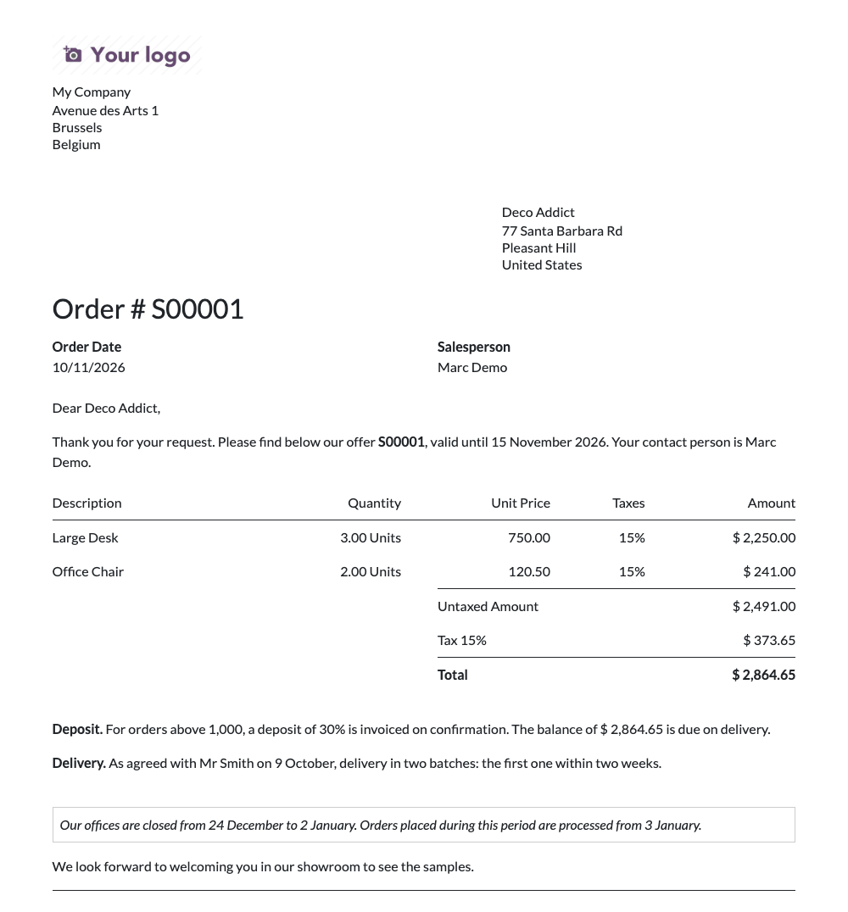
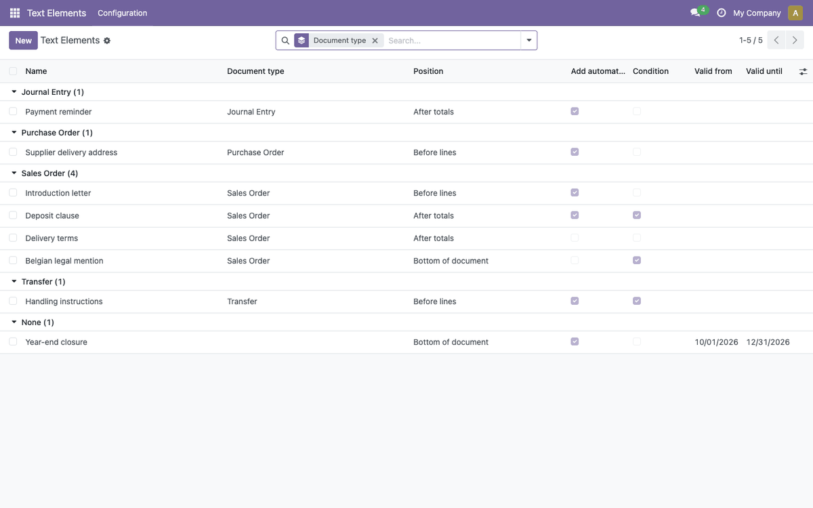
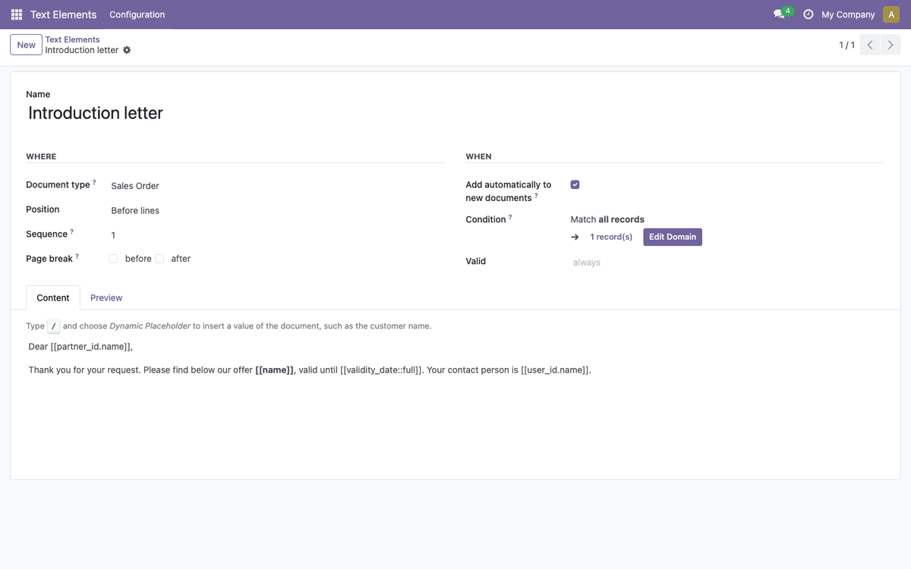
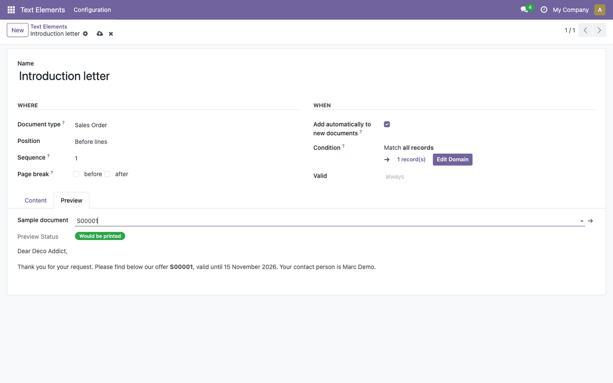
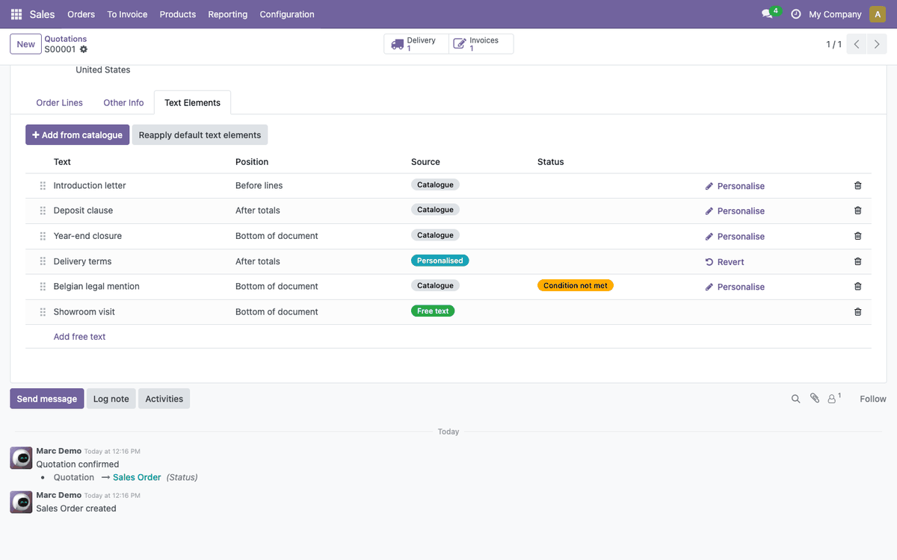

Text Elements
Legal notices, clauses and messages on your PDF documents, written once and
printed in the right place, without a developer.
Every company has sentences that belong on its documents: a year-end closure
notice, a legal mention for one subsidiary, a deposit clause above a certain
amount, a reminder that a pro forma is not an invoice. With Text Elements, the
people who know what a document must say write those texts in Odoo's editor and
decide where, on which documents and when they are printed.
This module holds the catalogue and the engine. Install the connectors for the
documents you need:
- Text Elements - Sale: quotations and sales orders
- Text Elements - Accounting: invoices and credit notes
- Text Elements - Purchase: requests for quotation and purchase orders
- Text Elements - Stock: delivery slips

Table of contents
- A catalogue of texts with rules. Each text says where it is printed (the
document type and the position), when (added automatically or on demand, a
condition on the document, a validity period) and what (rich text with values
of the document).
- Four positions: top of document, before lines, after totals, bottom of
document, with optional page breaks before or after a text.
- Dynamic placeholders: type / in the editor and choose Dynamic
Placeholder to insert a value of the document. Dates, amounts and currencies
are formatted in the customer's language. The former [[partner_id.name]]
syntax keeps working, with options such as [[date_order::full_date]].
- One list per document: catalogue texts, copies personalised for this
document, and free texts, with a warning when a text will not be printed.
- Preview: render a text on a sample document and see whether it would be
printed.
- Safe by design: a placeholder that does not match a field is refused when
saving, and a text never makes a report fail.
- Multilingual and multi-company: texts are translated like any Odoo content
and can belong to one company or be shared.

Members of the Text Elements Manager group, granted to Settings
administrators, maintain the catalogue in Text Elements > Configuration > Text
Elements. Other internal users read it and adapt texts on their own documents.
A text element answers three questions:
- Where: the document type (empty for every document), the position, its
order among the texts of the same position, and optional page breaks.
- When: Add automatically to new documents, a Condition on the document
(for example the customer's country or the amount), a validity period, and the
company.
- What: the content. In the editor, type / and choose Dynamic
Placeholder to insert a value of the document.

The Preview tab renders the text on a sample document and tells whether it
would be printed.

On a document, the Text Elements tab lists every text that will be printed,
with its position and its source:

- Catalogue: follows the catalogue text; a correction in the catalogue is
printed on the next print.
- Personalised: a copy adapted for this document, written in the customer's
language. The conditions of the catalogue text still apply. Revert returns
to the catalogue text.
- Free text: written for this document only, always printed.
The tab offers two buttons:
- Add from catalogue opens the catalogue texts that can still be added;
select several and confirm.
- Reapply default text elements adds the automatic texts the document lacks
and removes the automatic ones that no longer apply. Texts added by hand or
personalised are kept. The same happens when the customer or the company of
the document changes.
Automatic texts created after a document are not added to it until one of these
happens, so that documents already sent do not change on reprint.
Any model with a PDF report can print text elements. In a small module:
- inherit text.element.abstract on the model;
- add the text_element_custom_ids field to its form, with the
text_element_add_from_catalogue widget and the
action_reapply_default_text_elements button (see the Sale connector);
- in the report, set text_element_record and use_text_elements, and
call text_element_base.text_element_layout with the before_line and
after_line positions. The top and bottom positions come with Odoo's
standard document layouts.
The module was initially developed by Elneo in version 8.0 and later migrated
to version 13.0. It was then taken over by Noviat, with Elneo's approval, to be
refactored and made generic.
This module is maintained by Noviat, Odoo
integrator in Belgium. Questions, or a connector for another document?
Contact us: https://www.noviat.com/contact